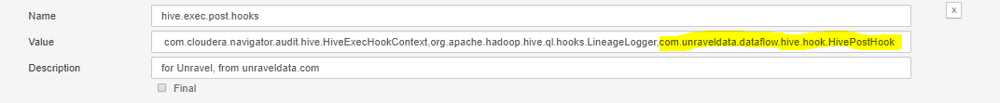

Part 2: Install Unravel Sensor Parcel on CDH+CM
Introduction
This topic explains how to install the Unravel Sensor 4.0 parcel on CDH clusters using Cloudera Manager (CM). The parcel includes Hive Hook and Spark instrumentation JARs. Hive Hook is used to collect information about Hive queries in Hadoop. The Spark instrumentation JARs measure Spark job performance.
These instructions apply to Unravel Sensor 4.0. For older versions of Unravel Server, contact Unravel Support.
Before following these instructions, follow the steps in Part 1: Install Unravel Server on CDH+CM.
Workflow Summary
Obtain and distribute the parcel from Unravel Server.
Put the Hive Hook JAR in AUX_CLASSPATH.
Configure the gateway automatic deployment of Hive instrumentation.
Configure the gateway automatic deployment of Spark instrumentation.
Note
Highlighted text below indicates where you must substitute your particular values.
When Active Directory Kerberos is used, UNRAVEL_HOST_IP must be a fully qualified path.
 In this section...Table of Contents
In this section...Table of Contents
3. Configure the Gateway Automatic Deployment of Hive Instrumentation
4. Configure the Gateway Automatic Deployment of Spark Instrumentation
5. Optional - Configure YARN - MapReduce (MR) JVM Sensor Cluster-Wide
1. Obtain and Distribute the Parcel from Unravel Server
In Cloudera Manager, go to the Parcels page by clicking the parcels glyph (
) on the top of the page.
Click Configuration to see the Parcel Settings pop-up.
In the Remote Parcel Repository URLs section, click the + glyph to add a new entry.
Add
http://UNRAVEL_HOST_IP:3000/parcels/cdhX.Y/(include trailing slash) whereX.Yis the major, minor version of CDH version you are running andUNRAVEL_HOST_IPis the host name or LAN IP address of Unravel Server whereunravel_lris running. If you are running more than one version of CDH (multiple clusters) in Cloudera Manager, you can add more than one parcel directory from theUNRAVEL_HOST_IP.Click Save.
Click Check for New Parcels.
On the Parcels page, pick a target cluster in the Location box.
In the list of Parcel Names, find the
UNRAVEL_SENSORparcel that matches the version of the target cluster and click Download.Click Distribute.
If you have an old parcel from Unravel, you can deactivate it now.
Then click Activate on the new parcel.
2. Put the Hive Hook JAR in AUX_CLASSPATH
In Cloudera Manager, for the target cluster, click Hive | Configuration, and search for "hive-env" (without quotes).
In Gateway Client Environment Advanced Configuration Snippet (Safety Valve) for
hive-env.shenter the following:AUX_CLASSPATH=${AUX_CLASSPATH}:/opt/cloudera/parcels/UNRAVEL_SENSOR/lib/java/unravel_hive_hook.jar
In Cloudera Manager, click YARN | Configuration, and search for "hadoop-env" (without quotes).
In Gateway Client Environment Advanced Configuration Snippet (Safety Valve) for
hadoop-env.sh, enter the following:HADOOP_CLASSPATH=${HADOOP_CLASSPATH}:/opt/cloudera/parcels/UNRAVEL_SENSOR/lib/java/unravel_hive_hook.jar
If Sentry is Enabled:
Sentry commands may also be needed to enable access to the Hive Hook JAR file. Grant privileges on the JAR files to the roles that run hive queries. Log into Beeline as user hive and use the Hive SQL GRANT statement to do so. For example (substitute $ROLE as appropriate):
GRANT ALL ON URI 'file:///opt/cloudera/parcels/UNRAVEL_SENSOR/lib/java/unravel_hive_hook.jar' TO ROLE $ROLE
3. Configure the Gateway Automatic Deployment of Hive Instrumentation
Use Cloudera Manager to deploy the hive-site.xml snippet, which is the content of /usr/local/unravel/hive-hook/hive-site.xml.snip on Unravel Server.
Note
Note: On a multi-host Unravel Server deployment, use host2's /usr/local/unravel/hive-hook/hive-site.xml.snip
Set the hive-site.xml Snippet in Cloudera Manager, and Deploy the Hive Client Configuration to Gateways
In Cloudera Manager (CM):
Go to Hive service.
Select the Configuration tab.
Search for
hive-site.xmlin the middle of the page.Add the xml snippet to Hive Client Advanced Configuration Snippet for hive-site.xml (Gateway Default Group) (Click View as XML).
Warning
If cluster has been configured with "Cloudera Navigator"; the hive.exec.post.hooks property should has exsiting value(s). Therefore append the unravel's value into the existing hive.exec.post.hooks property with a comma and no space. (see example below)
com.cloudera.navigator.audit.hive.HiveExecHookContext,org.apache.hadoop.hive.ql.hooks.LineageLogger,com.unraveldata.dataflow.hive.hook.HivePostHook
Add the xml snippet to HiveServer2 Advanced Configuration Snippet for hive-site.xml. (Click View as XML). Like above step, if properties exists, append unravel's value.
Save the changes with optional comment "Unravel snippet in hive-site.xml".
Perform action Deploy Hive Client Configuration by clicking the deploy glyph (
) or by using the Actions pull-down menu.
Restart the Hive and YARN services (click Restart Stale Services if that is visible.)
Again, monitor the situation to see if all Hive queries are failing with a class not found or permission problems. If they are failing, you can back-out the hive-site.xml advanced snippet changes in Cloudera Manager, deploy client configuration, and restart the Hive service to revert, then refer to Troubleshooting below.
Check Unravel Web UI
If queries are running fine and appearing in Unravel Web UI, then you are done.
4. Configure the Gateway Automatic Deployment of Spark Instrumentation
In Cloudera Manager, select the target cluster, then select the Spark service.
Select Configuration.
Search for "spark-defaults".
In the Spark Client Advanced Configuration Snippet (Safety Valve) box for spark-conf/spark-defaults.conf, enter the following text, substituting the highlighted text for your particular values:
Note
On a multi-host Unravel Server deployment, use logical host2 for
UNRAVEL_HOST_IP.Warning
Copy the text below and paste it into the Cloudera Manager's Spark Client Advanced Configuration Snippet (Safety Valve) box for spark-conf/spark-defaults.conf. Then, modify the value of
UNRAVEL_HOST_IP. Do not paste this text into the machine's Linux shell.spark.unravel.server.hostport=UNRAVEL_HOST_IP:4043 spark.driver.extraJavaOptions=-javaagent:/opt/cloudera/parcels/UNRAVEL_SENSOR/lib/java/btrace-agent.jar=bootClassPath=/opt/cloudera/parcels/UNRAVEL_SENSOR/lib/java/unravel-boot.jar,systemClassPath=/opt/cloudera/parcels/UNRAVEL_SENSOR/lib/java/unravel-sys.jar,scriptOutputFile=/dev/null,script=DriverProbe.class:SQLProbe.class -Dcom.sun.btrace.FileClient.flush=-1 -Dcom.unraveldata.spark.sensor.disableLiveUpdates=true spark.executor.extraJavaOptions=-javaagent:/opt/cloudera/parcels/UNRAVEL_SENSOR/lib/java/btrace-agent.jar=bootClassPath=/opt/cloudera/parcels/UNRAVEL_SENSOR/lib/java/unravel-boot.jar,systemClassPath=/opt/cloudera/parcels/UNRAVEL_SENSOR/lib/java/unravel-sys.jar,scriptOutputFile=/dev/null,script=ExecutorProbe.class -Dcom.sun.btrace.FileClient.flush=-1 spark.eventLog.enabled=true
Notice that in this code block, the blank lines separate only one full line of text that is wrapped due to length.
5. Save changes.
6. Deploy client configuration by clicking the deploy glyph () or by using the Actions pull-down menu.
Warning
Monitor the situation to see if all Spark queries are failing with a class not found or permission problems. If they are failing, you can back-out the spark-defaults.conf changes in Cloudera Manager, re-deploy client configuration, and then investigate and fix the issue.
5. Optional - Configure YARN - MapReduce (MR) JVM Sensor Cluster-Wide
Set in Cloudera Manager
In Cloudera Manager (CM):
Go to YARN service.
Select the Configuration tab.
Search for ApplicationMaster Java Opts Baseand concatenate the following xml block properties snippet (ensure to start with a space and add below).
-javaagent:/opt/cloudera/parcels/UNRAVEL_SENSOR/lib/java/btrace-agent.jar=systemClassPath=/opt/cloudera/parcels/UNRAVEL_SENSOR/lib/java/unravel-mr-sys.jar,bootClassPath=/opt/cloudera/parcels/UNRAVEL_SENSOR/lib/java/unravel-mr-boot.jar,scriptOutputFile=/dev/null -Dcom.sun.btrace.FileClient.flush=-1 -Dunravel.server.hostport=UNRAVEL_HOST_IP:4043
Notice that in this code block, ensure "-" is a minus sign and customer need to modify the value of
UNRAVEL_HOST_IPwith their own Unravel server IP address. For multi-host Unravel installation, use the IP address of Host2.Search for MapReduce Client Advanced Configuration Snippet (Safety Valve) for mapred-site.xml in the middle of the page.
Enter following xml four block properties snippet to Gateway Default Group (Click View as XML).
<property><name>mapreduce.task.profile</name><value>true</value></property> <property><name>mapreduce.task.profile.maps</name><value>0-5</value></property> <property><name>mapreduce.task.profile.reduces</name><value>0-5</value></property> <property><name>mapreduce.task.profile.params</name><value>-javaagent:/opt/cloudera/parcels/UNRAVEL_SENSOR/lib/java/btrace-agent.jar=systemClassPath=/opt/cloudera/parcels/UNRAVEL_SENSOR/lib/java/unravel-mr-sys.jar,bootClassPath=/opt/cloudera/parcels/UNRAVEL_SENSOR/lib/java/unravel-mr-boot.jar,scriptOutputFile=/dev/null -Dcom.sun.btrace.FileClient.flush=-1 -Dunravel.server.hostport=UNRAVEL_HOST_IP:4043</value></property>
Notice that in this code block, ensure "-" is a minus sign and customer need to modify the value ofUNRAVEL_HOST_IP with their own Unravel server IP address. For multi-host Unravel installation, use the IP address of Host2.
6. Save changes.
7. Deploy client configuration by clicking the deploy glyph () or by using the Actions pull-down menu.
8. Restart the YARN services (click Restart Stale Services if that is visible. However, you can also perform this later when you have a planned maintenance)
Tip
Monitor the situation and you should see in Unravel UI a Resource Usage tab showing you mappers and reducers when you view the Application page for any completed MRjob. Restart is important for MR sensor to be picked up by queries submitted via Hiveserver2.
Troubleshooting
|
Symptom |
Problem |
Remedy |
|
shows directory does not exist |
|
Install Unravel RPM on Unravel service host:
OR
Verify that |
|
|
Unravel hive hook JAR was not found in in |
Check whether UNRAVEL_SENSOR parcel was distributed and activated in CM. OR
Put the Unravel hive-hook JAR corresponding to
|
|
Permission denied writing to |
|
OR Sentry command is needed to give permission OR
revert to your previous |
References
{+}http://www.cloudera.com/documentation/enterprise/5-3-x/topics/cm_mc_hive_udf.html#concept_nc3_mms_lr_unique_2+ see Creating Permanent Functions.